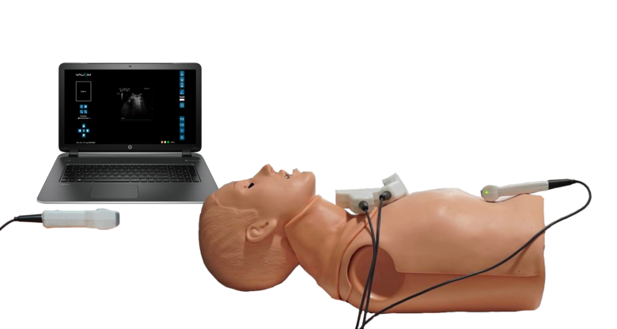

Une immersion de plus en plus importanteLes systèmes d’immersion n’ont eu de cesse de s’améliorer. De l’immersion 3D à l’immersion par la réalité virtuelle en passant par l’immersion 360°,ces systèmes ont su se développer pour immerger les apprenants au cœur d’interventions hyper réalistes.
Des outils hyper réalistes Outre ces nouveaux systèmes d’immersion, la diversification et l’amélioration des outils de simulation notamment les mannequins a permis d’augmenter grandement la qualité des formations.